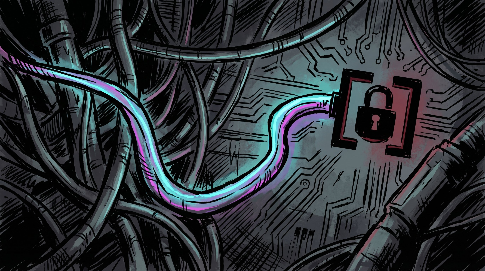

Debugging Auth Lock Race Conditions

This week was deep in the weeds of FlowBoard's Supabase integration—specifically, hunting down a particularly nasty family of race conditions that were causing the app to hang indefinitely during auth transitions.
The symptoms were frustrating because they were inconsistent. Sometimes the app would load fine. Other times, the dashboard would get stuck on "Loading projects..." and wouldn't recover. After a quick sign-out/sign-in, it might hang again. And if you navigated between pages too quickly, the canvas wouldn't load.
The Root Cause: Auth Lock Contention
Supabase's JavaScript SDK uses an internal auth lock to serialize access to session state. When you call signInWithPassword, it acquires this lock, updates the session, and then releases it. Any other code trying to call getSession() during this time has to wait.
The problem: I had multiple places in the codebase calling getSession() concurrently during auth transitions, without knowing about the lock. One particularly bad offender was the LoginPage, which was using Promise.race() to timeout the login after a few seconds:
const result = await Promise.race([
signInWithPassword(...),
new Promise((_, reject) =>
setTimeout(() => reject('Timeout'), 3000)
)
]);If the timeout fired before the auth lock was released, the signInWithPassword call would be abandoned—but the lock wouldn't be released. Any subsequent getSession() call would then block indefinitely, waiting for a lock that would never be released.
The Cascading Failures
Once the auth lock was stuck, the failures cascaded through the application:
- listProjects calls
ensureFreshSession()→ blocks ongetSession()→ hangs forever - Dashboard calls
listProjects()→ waits for the hung promise → "Loading projects..." never clears - Canvas editor mounts and calls
loadProject()→ also blocks ongetSession()→ loading spinner never stops
I found at least three distinct scenarios where this would happen, each with its own variant of the same root cause.
The Fixes
1. Timeout auth operations, not login flow
Instead of using Promise.race to timeout the entire login call (which abandons the auth lock), I wrapped the timeout in the UI layer:
// Bad: abandons the auth call
const result = await Promise.race([signInWithPassword(...), timeout])
// Good: timeout only resets UI state, not the underlying call
await signInWithPassword(...).catch(() => {})
setTimeout(() => setIsLoading(false), 3000)2. Add timeouts to getSession() itself
Even better: add a 5-second timeout directly to ensureFreshSession() so that any auth lock contention gets detected and handled gracefully:
async ensureFreshSession() {
return Promise.race([
this.getSession(),
new Promise((_, reject) =>
setTimeout(() => reject('Auth lock timeout'), 5000)
)
])
}This way, if the lock is held for more than 5 seconds (a clear sign something is wrong), the call fails fast instead of hanging.
3. Guard effect conditions
The Dashboard had a useEffect that ran whenever location.key changed. This was firing loadProjects() even when navigating away from the dashboard, racing with other page transitions:
useEffect(() => {
loadProjects() // Runs even when leaving /dashboard!
}, [location.key])The fix: add a pathname guard to ensure we only run the effect when actually on the dashboard:
useEffect(() => {
if (location.pathname !== '/dashboard') return
loadProjects()
}, [location.key])The Vercel Build Surprises
While fixing the auth issues, I discovered two silent build failures that Vercel had been accumulating:
- Missing lucide-react dependency: I was importing
Loader2from lucide-react, which worked locally (transitive dep) but wasn't declared in package.json. Vercel's stricter tsc would fail silently. Replaced it with an inline SVG spinner. - TypeScript typing in historyStore: The storage adapter returned
string | nullinstead of the Zustand-expectedPersistStoragetype. Wrapping withcreateJSONStorage()fixed it.
These had been failing every Vercel deploy for weeks without anyone noticing.
Lessons
This work reinforced a few principles I keep learning:
- Locks hide problems. When debugging async code, don't just look at the visible API—understand the synchronization primitives underneath. Supabase's auth lock is internal, but it's crucial to know about.
- Timeout strategies matter. Using
Promise.raceto timeout an async operation is tempting but dangerous—you're not just timing out the logic, you're abandoning the operation's side effects. - Race conditions are reproducible if you think about state transitions. Instead of randomly clicking around hoping to trigger the bug, I traced through the state machine: what happens if login times out? What happens if the user navigates before the lock releases? These questions led directly to the fixes.
FlowBoard should now handle auth transitions much more gracefully. Next up: getting the editor's real-time collab features working end-to-end.